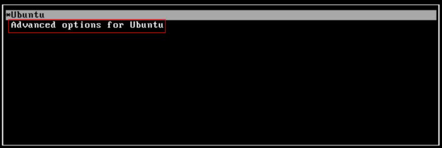

前言
記錄一下有遇到安裝Ubutnu的相關的問題
logrotate 設定
log 沒做rotate就會一直長大, 一個log file 12 GB有沒有看過?
打都打不開, 光用vim都會開很久.
這個時候我們需要做設定, 這邊說明一下.
Log rotate 設定檔在 /etc/logrotate.d/
分割設定： 在/etc/logrotate.d/目錄下生成該tool檔案例如fmsserver
1 | /tmp/cron*.log { #注意：請以自己的tool為準 |
logrotate命令格式
logrotate [OPTION…]
1 | -d , --debug:debug模式，測試配置文件是否有錯誤 |
要測試寫好的設定檔可以用以下命令：
1 | sudo /usr/sbin/logrotate -d /etc/logrotate.d/fmsserver |
要執行寫好的設定檔
1 | sudo /usr/sbin/logrotate -vf /etc/logrotate.d/fmsserver |
log的寫法有兩種一種是清除檔案重新一個新檔
1 | root python3.6 /usr/share/nginx/0_0/schedule/event_gop_to_mp4.py >> /tmp/cron_event_gop_to_mp4.log 2> /tmp/cron_event_gop_to_mp4.log |
log的寫法有兩種一種是append檔案
1 | root python3.6 /usr/share/nginx/0_0/schedule/event_gop_to_mp4.py >> /tmp/cron_event_gop_to_mp4.log 2>&1 |
如果要保留log在其它的目錄，可以在home的目錄下建立一個tmp的資料夾將log的資料指到那個目錄
1 | /tmp/uwsgi_*.log { |
參考資料
安裝redis
1 | sudo apt update |
redis的狀態
1 | sudo systemctl status redis |
redis的設定 sudo vim /etc/redis/redis.conf不然會連線不到
1 | bind 0.0.0.0 |
在停止的時候會有報錯redis-server.service: Can't open PID file /var/run/redis/redis-server.pid (yet?) after start: No such file
解決方法如下：
1 | vi /usr/lib/systemd/system/redis.service #centos 7 |
在[Service]下新增一行ExecStartPost=/bin/sh -c "echo $MAINPID > /var/run/redis/redis.pid"
1 | [Service] |
隨後動啟服務：
1 | sudo systemctl daemon-reload |
安裝nginx
這是為了測試nginx的前後台分離，會改寫上一個範例，使用nginx來當web的網站和web service
1 | sudo apt install nginx |
檢查nginx的狀態
1 | systemctl status nginx |
nginx的相關命令
1 | sudo systemctl stop nginx |
安裝MariaDB
版本 10.5.6-MariaDB
1 | sudo apt-get install software-properties-common dirmngr apt-transport-https |
接下來
1 | sudo apt update |
檢查版本
1 | mysql -V |
設定root
安裝MariaDB過程中沒有問root密碼要設什麼，也沒有預設密碼，那之後用什麼密碼連呢？紀錄一下，免得忘記：
用sudo使用無密碼進入mysql
1 | sudo mysql -u root |
建立使用者
1 | mysql> |
不能遠端連線
1 | sudo vim /etc/mysql/mariadb.conf.d/50-server.cnf |
https://websiteforstudents.com/allow-remote-access-to-mariadb-database-server-on-ubuntu-18-04/
主要是將bind-address = 127.0.0.1 修改成 bind-address = 0.0.0.0
命令
1 | sudo systemctl stop mariadb.service |
NFS Server安裝
(參考)[https://www.opencli.com/linux/debian-ubuntu-install-nfs-server]
在StorageServer(172.31.1.242)設定分享的目錄, 以下是media/vdisk
1 | cd /media |
開啟 /etc/exports 檔案, 加入以下內容: IP 是對方的IP
1 | /media/vdisk 172.31.37.81(rw,sync,no_root_squash,no_all_squash) |
啟動 NFS Server:
1 | /etc/init.d/nfs-kernel-server restart |
NFS Client 安裝: 在AppServer(172.31.37.81))
1 | sudo apt-get install nfs-common |
建立 NFS 目錄掛載點:
1 | cd /media/ |
現在可以用 mount 指令掛載 StorageServer(172.31.1.242)分享出來的目錄:
1 | sudo mount -t nfs 172.31.1.242:/media/vdisk /media/vdisk |
多實例MariaDB
來安裝多個的DB
方案1-mysqld_multi
創建目錄并修改
1 | mkdir -pv /data/scheme1/mysql/{3307,3308}/data # 創建目錄 |
安裝數據庫
1 | mysql_install_db --datadir=/data/scheme1/mysql/3308/data --basedir=/usr --user=mysql # 安裝到數據目錄 |
配置文件
1 | sudo vim /etc/my.cnf |
內容
1 | [mysqld_multi] |
建立啟動服務
1 | sudo vim /etc/systemd/system/mysqld@.service |
內容
1 | [Unit] |
啟動實例
1 | systemctl start mysqld@3307 # 啟動指定的實例，這個是配罝在mysqld3307片段，實例名字就是3307 |
連接實例
1 | sudo mysql -u root -S /data/scheme1/mysql/3307/mariadb.sock |
開機啟動
1 | sudo systemctl enable mysqld@3307 |
參考資料
Setup Multiple MariaDB (or MySQL) Instances
mariadb多实例安装
基於mysqld_multi實現MySQL 5.7.24多實例多進程配置
防火牆相關
調整Firewall
啟動Firewall
1 | sudo ufw enable |
列出和Firewall有關的應用程式
1 | sudo ufw app list |
會看到下面的列表
1 | Output |
目前只使用到80，可以只打開80 port
1 | sudo ufw allow 'Nginx HTTP' |
可以檢查Firewall狀態
1 | sudo ufw status |
1 | Output |
Server版
安裝Xrdp Server
安裝這個套件是為了可以遠端桌面來連線
1 | sudo apt update |
主要是參考https://linuxize.com/post/how-to-install-xrdp-on-ubuntu-18-04/
Installing Xrdp
1 | sudo apt install xrdp |
Configuring Xrdp
1 | sudo nano /etc/xrdp/xrdp.ini |
在最後一行加入
1 | exec startxfce4 |
在重新啟動xrdp
1 | sudo systemctl restart xrdp |
安裝中文字型
中文字型可以安裝 文泉譯 字型，使用下列指令安裝：
1 | sudo apt install fonts-wqy-* |
並且可以解除安裝楷體自行，不然有些軟體會使用楷體顯示中文，
那麼看起來就怪怪的，可以使用下列指令解除安裝。
1 | sudo apt remove fonts-arphic-ukai |
桌面版
安裝VMWare的Ubutnu的相關問題
安裝VMware Tools for Linux
可以參考一下VMware Player 6.0安裝VMware Tools for Linux
安裝XRDP
這是套件可以讓我們從win10以遠端桌面的方式，來控制linux，但是因為在Ubuntu的18.04.3的版本，直接安裝完後不能使用，外國有神人有解，以他們的方式來處理
使用這篇直以
http://c-nergy.be/blog/?p=13933
1 | ./Std-Xrdp-Install-0.6.1.sh -s yes |
安裝git和git gui
1 | sudo apt-get install git-core git-cola |
安裝VSCode
1 | sudo apt update |
OpenSSH Server
1 | sudo apt-get install -y openssh-server |
samba
1 | sudo apt-get install samba samba-common |
檢查是否有執行
1 | sudo systemctl status smbd |
新增一個 smbuser 使用者:(不用)
1 | sudo adduser smbuser --shell /bin/false |
接著就是用 smbpasswd 指令的 -a 選項來將這個 smbuser 帳號設定為 Samba 的使用者帳號:(不用)
1 | sudo smbpasswd -a smbuser |
如果要與使用者同名則:
1 | sudo smbpasswd -a hisharp |
設定Samba
編輯 /etc/samba/smb.conf
1 | [share] |
加入另一個
1 | [smbvdisk] |
使用mount的指令
在另一台上安裝
1 | sudo apt install cifs-utils |
使用指令
1 | sudo mount -t cifs -o username=hisharp '//192.168.40.209/smbvdisk' /media/vdisk |
開機使用
1 | sudo vim /etc/fstab |
加入
1 | //192.168.40.209/smbvdisk /media/vdisk cifs username=hisharp,password=密碼 0 0 |
設定網路
我們家的設定值有比較特別一點
1 | # Let NetworkManager manage all devices on this system |
複制虛擬Ubuntu的系統的相關問題
在複制了虛擬Ubuntu的系統後有一些設定要修改記錄一下
如何複制
我是用VirtualBox來作為虛擬的環境，在原來已有安裝一分設定好也可以執行的環境，直接拿來用就可以了，在VirtualBox上有提供了一個功能再製在虛擬機器上，按右鍵，選擇再製,就可以了，接下來輸入名字就可以
重要在設定新的網路的時候，要重新選新的網卡，不然在設定網路會無效
Ubuntu 18.04 設定 netplan 靜態 IP
主要是修改 /etc/netplan/50-cloud-init.yaml 改成下面這樣：
1 | # This file is generated from information provided by |
修改後存檔後輸入以下命令：
sudo netplan try
如果測試沒有問題，就可以執行以下命令真正進行設定：
sudo netplan apply
修改主機名稱
例如，把主機名稱修改成 ubuntu-bionic-x64：
1 | sudo hostnamectl set-hostname ubuntu-bionic-x64 |
時候終端機還看不出變化，我們可以用 hostnamectl status 檢查有沒有修改成功
修改完後沒有作用需要修改下面的檔案的值
1 | # vi /etc/cloud/cloud.cfg |
在裏面修改preserve_hostname: true
重新取得dhcp的IP
1 | $ sudo dhclient -r |
參考資料
使用hostnamectl 修改主機名稱
Ubuntu 18.04 設定 netplan 靜態 IP
在 VirtualBox 中，複製、再製虛擬機器
安裝Flask(在虛擬環境下)
1 | pip3 install flask |
測試一下
建立order的目錄和hello.py
1 | from flask import Flask |
打開瀏覽器，網址是ubuntu的ip加5000,例如http://192.168.83.128:5000/
Linux APT 遇到 NO_PUBKEY 的 GPG error 解法
1 | sudo apt-key adv --keyserver keys.gnupg.net --recv-keys EB9B1D8886F44E2A |
安裝Python(未執行)
目前是3.6的版本所以不安裝
使用原始碼來安裝
編譯python用到的元件
1 | sudo apt install build-essential zlib1g-dev libncurses5-dev libgdbm-dev libnss3-dev libssl-dev libreadline-dev libffi-dev wget |
下載用到的原始碼
1 | cd /tmp |
解壓
1 | sudo tar -zxvf Python-3.6.12.tgz |
安裝
1 | //移除原來的 |
1 | sudo mkdir /usr/local/python3.6.12 |
解決Ubuntu 16.04重啟錯誤:未執行
Kernel Panic — not syncing: VFS: Unable to mount root fs on unknown-block(0,0)
首先會出現這個錯誤有很高機率是你的/boot空間已經滿載了，因此為了能先進入系統內做清理，我們第一步需要先將VM的電源關閉，稍等一下再重新啟動電源，此時會進入Ubuntu開機選單，大概會長的像下圖，請選擇Advanced options for Ubuntu的選項：

進去後你會看到許多不同版本的內核清單，大概會如下圖所示，這時候就是很考驗人品的時候了，請選擇一個來開啟吧，記得不要選recovery mode：
如果你成功啟動並登入，那恭喜你成功一半了！接著用下列指令檢查容量狀況：
1 | df -h |
果然是boot滿了！既然如此，先用下列指令確定目前運作的內核版本：
1 | uname -a |
我的版本
1 | 4.15.0-122-generic |
記好後，進入/boot資料夾，裡面會有各個不同版本的內核相依檔案，先手動刪除低於目前運作版本的相依檔案，直到/boot容量非100％為止。
1 | config-4.15.0-122-generic initrd.img-4.15.0-135-generic vmlinuz-4.15.0-122-generic |
接著執行以下指令修復一些損壞的內核：
1 | sudo apt-get -f install |